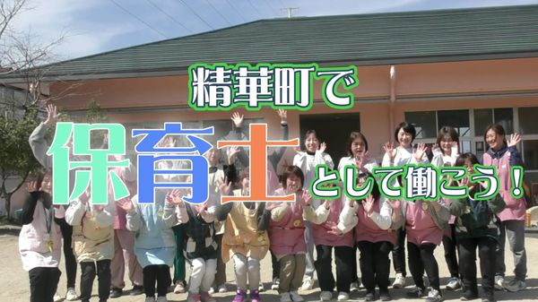
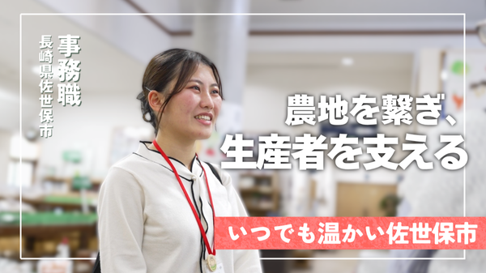
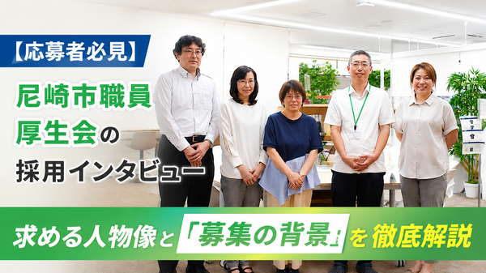
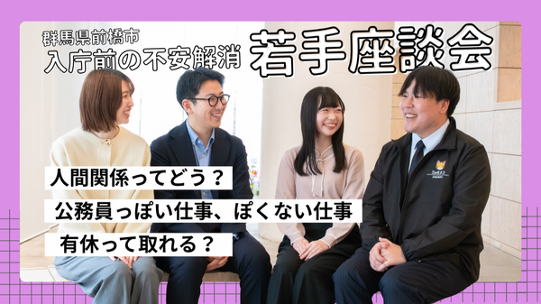
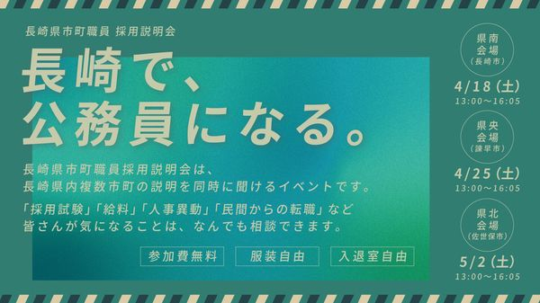
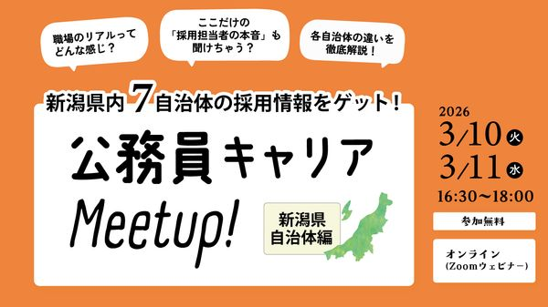

官公庁・自治体の求人・採用情報サイト｜パブリックコネクト
官公庁・自治体
官公庁や自治体が運営する採用情報ページです。お気に入り登録すると新着通知を受け取れます。
官公庁・自治体ブログ
官公庁や自治体が作成した、仕事や人、地域の魅力が詰まった記事です。
-
職員インタビュー NEW
-
-
-
管理職インタビュー NEW
官公庁・自治体ムービー
仕事や地域、人の魅力が盛りだくさんの動画です。
-

インタビュー動画 NEW -

職員インタビュー NEW -

-

職員インタビュー
特集
まだ知らない官公庁や自治体の魅力を届ける、パブリックコネクト編集部の記事です。
-

-

新着求人
新着の求人情報をお届けします。
-
行政事務
上北山村役場（奈良県）
-
その他
日出町役場（大分県）
-
保育士・幼稚園教諭
印西市役所（千葉県）
-
行政事務
宇和島市病院局（愛媛県）
官公庁・自治体で働くなら、パブリックコネクト
パブリックコネクトは、日本全国の官公庁・自治体が求人や採用PRを掲載する求人サイトです。求人だけでなく、自治体のブログや動画を見て、希望条件に合う求人へ応募することができます。
ご利用の流れ
-
STEP 1
無料会員登録
簡単に会員登録ができます。気になる求人や官公庁をお気に入り登録して、通知を受け取りましょう。
-
STEP 2
プロフィール情報の登録
学歴や職歴などのプロフィール情報を登録します。気になる求人・新着求人にすぐ応募できます。
-
STEP 3
求人へのエントリー
求人にエントリー後の官公庁との連絡は、パブリックコネクトのメッセージ機能で行います。
お役立ちコラム
公務員の採用試験や働き方に関する情報をお届けします。
公務員の求人、採用試験に関する情報（応募要件や日程など）をお探しでしたら、官公庁・自治体の求人に特化したパブリックコネクトをご活用ください。事務職から保育士、保健師、土木職、地域おこし協力隊まで、あらゆる求人に応募できます。
よくあるご質問
会員登録は無料ですか？
はい、会員登録・ご利用はすべて無料です。気になる求人や官公庁・自治体をお気に入り登録して、新着通知を受け取れます。
どのような職種の求人がありますか？
行政事務をはじめ、土木・建築、保育士・幼稚園教諭、保健師・看護師、消防・救急など、官公庁・自治体のさまざまな職種の求人を掲載しています。
応募後の連絡はどのように行われますか？
求人へエントリーした後の官公庁・自治体とのやり取りは、パブリックコネクトのメッセージ機能を通じて行います。
公務員試験を受けたいのですが利用できますか？
はい。応募要件や試験日程などの採用情報を確認しながら、希望条件に合う求人に応募いただけます。